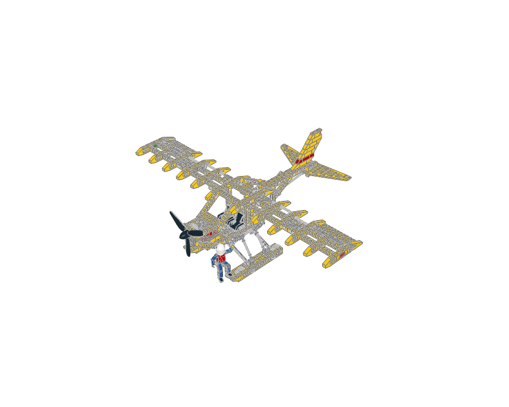
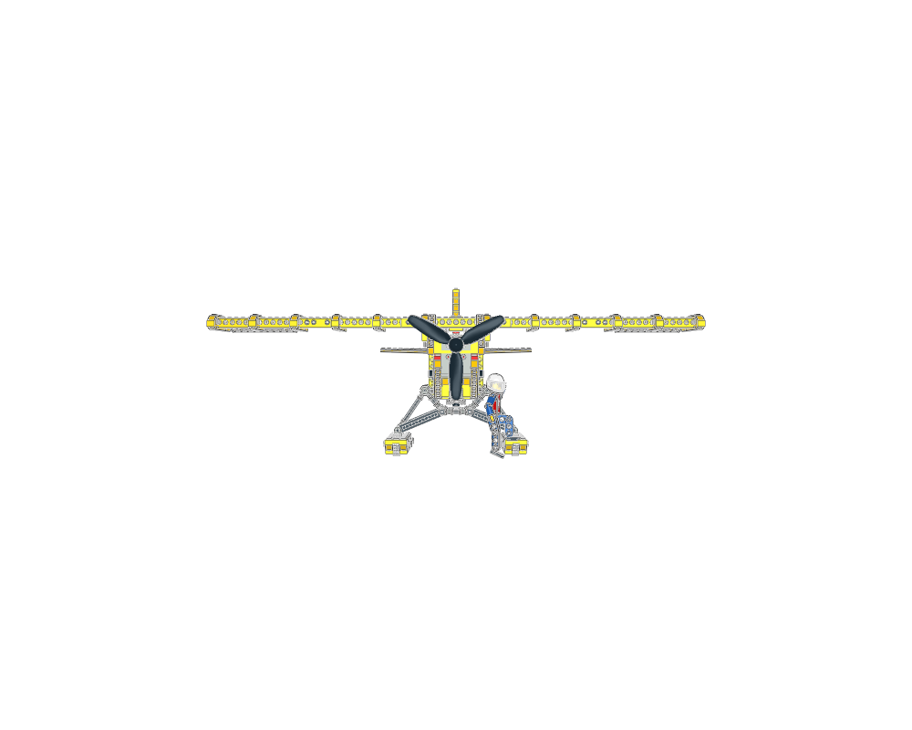
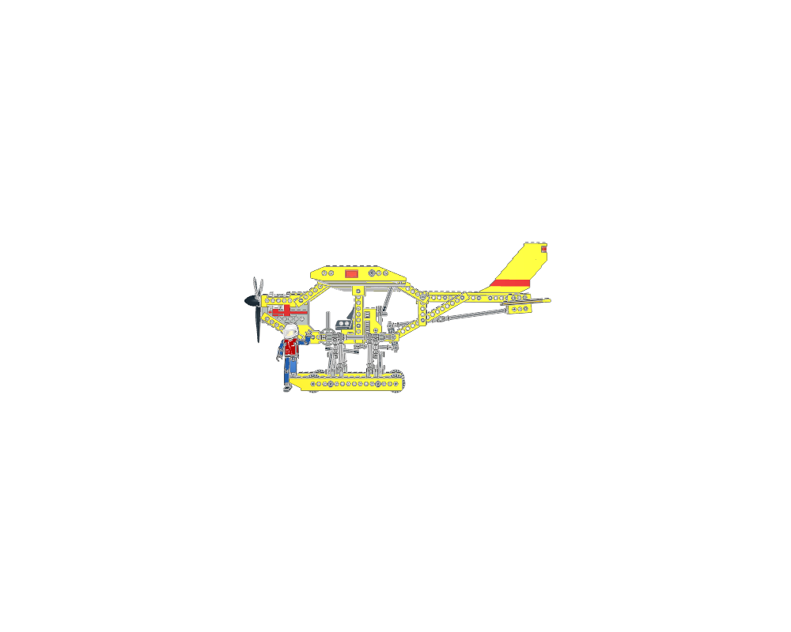
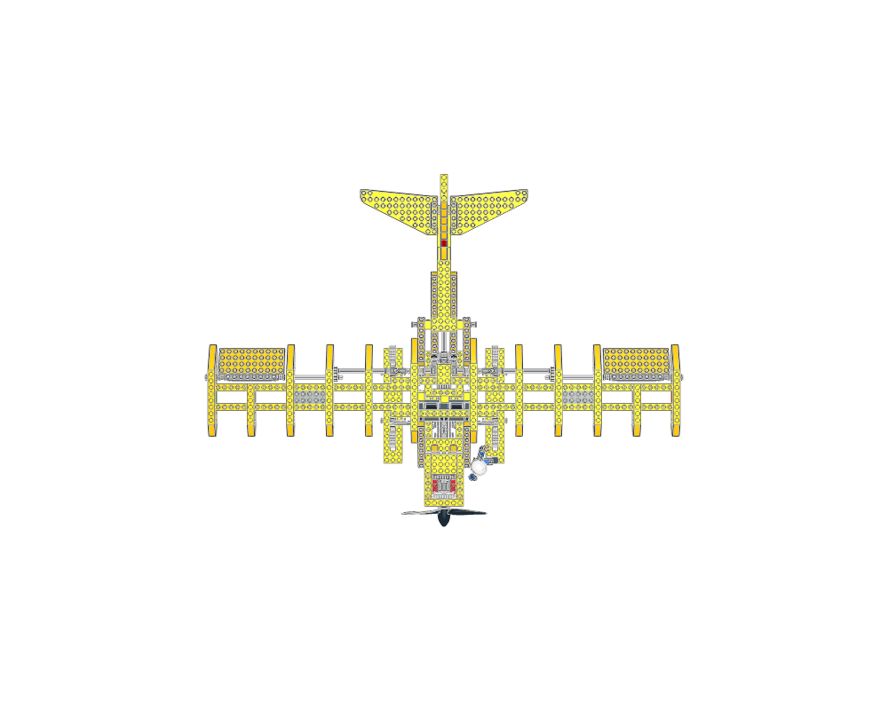
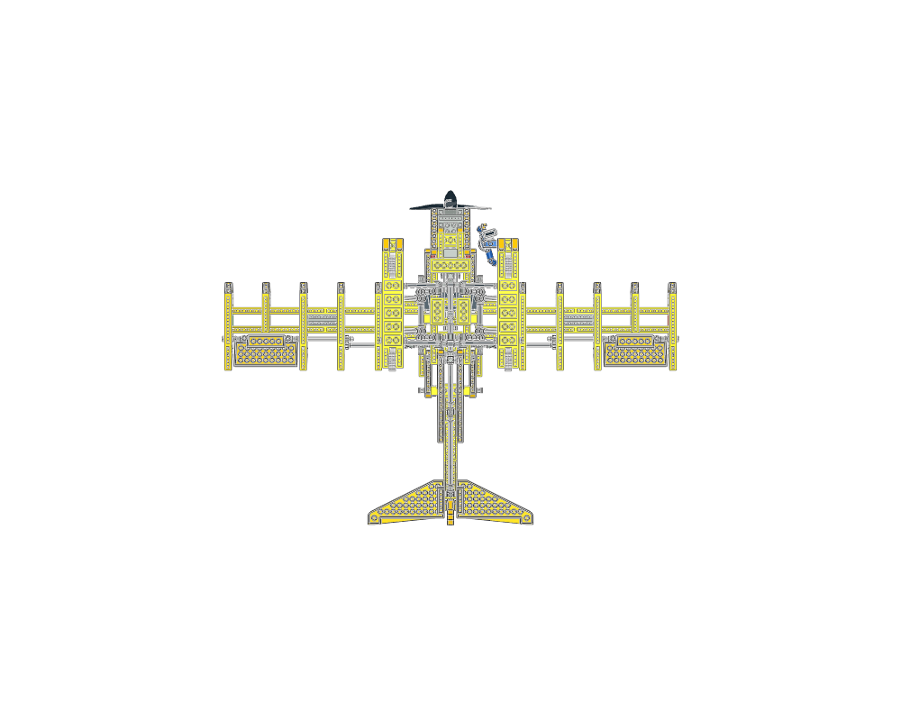
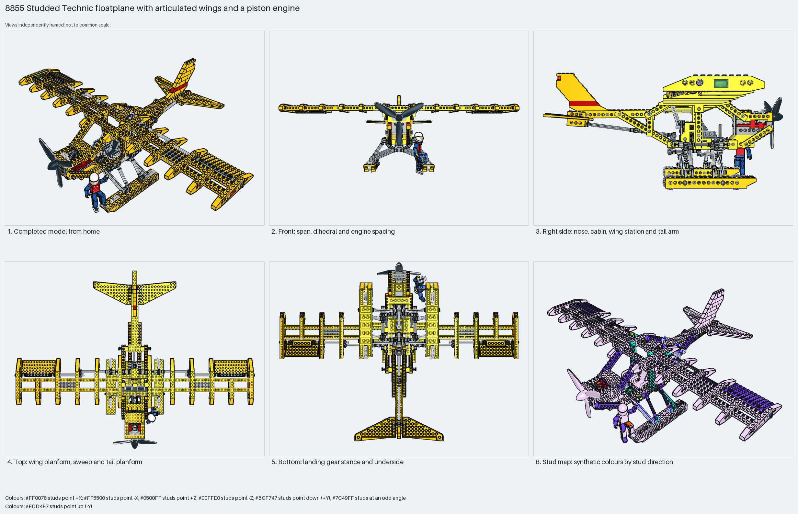

The 1988 studded Technic floatplane: a Technic-brick fuselage with an open cockpit and pilot, a high wing of Technic-brick spars and wing-brick ribs on universal joints, a piston engine behind a three-blade propeller, a tail boom with a 7×12 wing-plate tailplane and jumper-plate fin, and twin floats on an axle truss with wheels inside. Measured: span 72 studs, length 50, height 26, 598 parts, 66% Technic.
construction
598 parts in 81 steps across 20 sections: the `Prop Plane` root (fuselage of 1×16 and 1×12 Technic bricks and plates), `Engine block`, `Piston`, `Piston gear`, `Bottom gear` ×2, `Bottom link`, `Bottom back connector`, `Pontoons` with three joint children, `Triangle joint`, `Tail` with `Tail body`, `Wings` with two joints and two flaps, and the `Pilot`.
interfaces
327 studs up, 62 sideways, 198 angled. The wing's universal joints and towballs sit on the fuselage cabane; the floats' truss apexes pin under the fuselage; the propeller axle drives the piston through gears.
parent context
Root section; nothing places it. Built with the propeller at +Z, so LeoCAD's front view is the tail-on view.
reuse notes
Use it for the proportions and module layout of a studded Technic floatplane: span 1.4× length, high wing, floats two-thirds of the length. Inspiration only: the author scaled or skewed eight placements to match the strained real model, so rebuild rather than export.

home

front

right

top

bottom

mosaic
Sections to study separately
Use manual prepare on a selected source section to create its build pages.